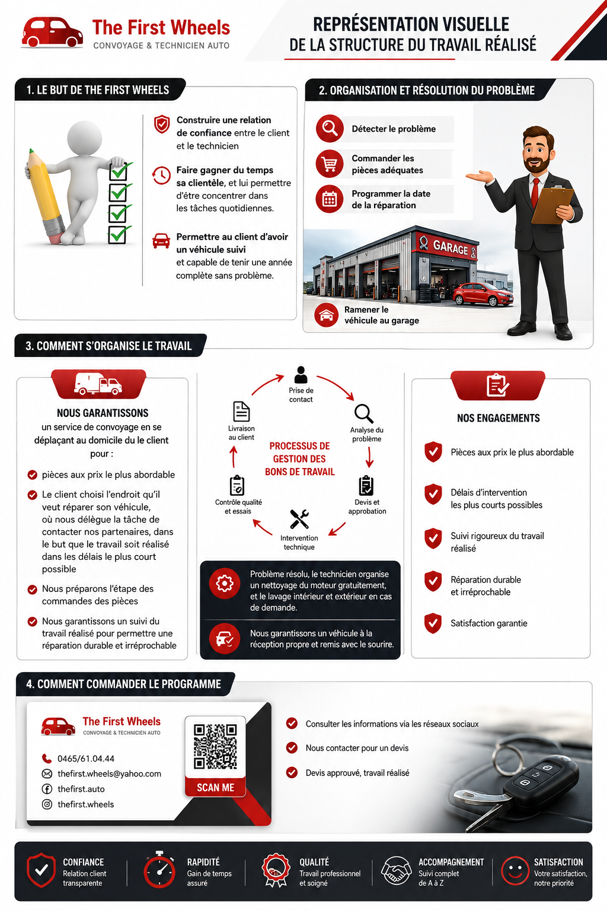
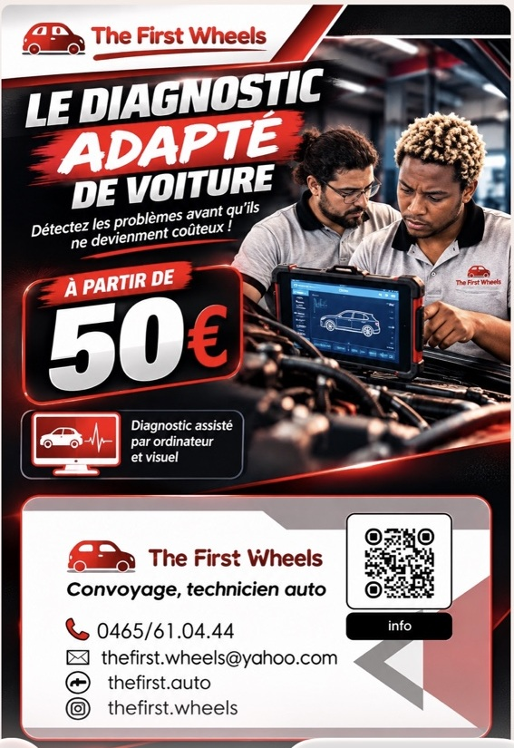
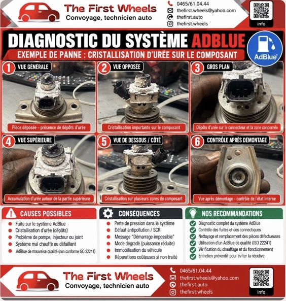
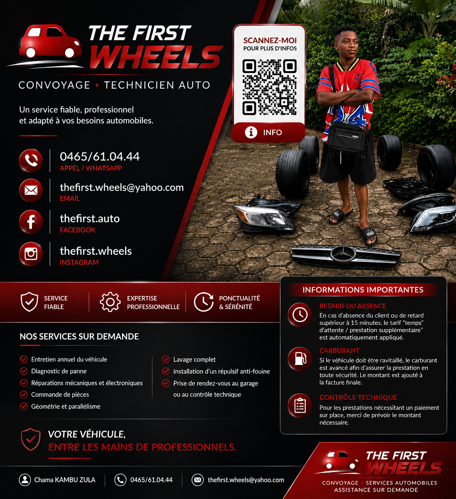
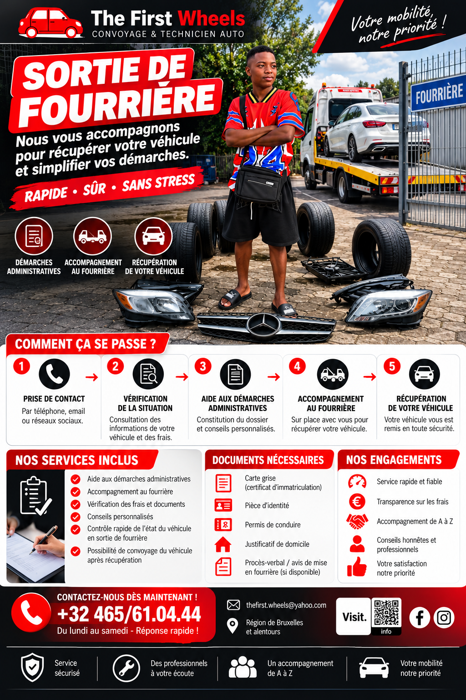
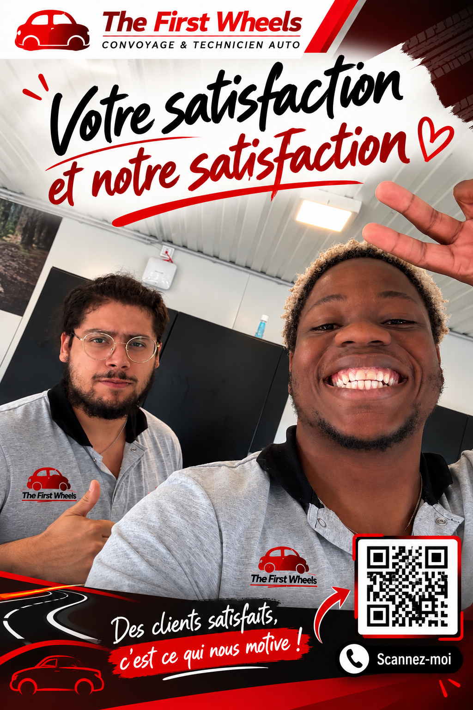
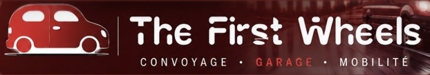

I
Entretien et réparation
Entretien courant ou réparation : nous étudions votre demande, identifions les interventions envisageables et vous expliquons les étapes avant toute décision.
Demander un devis ↗
Votre partenaire de confiance pour l’entretien et la mobilité automobile.
Entretien, diagnostic, convoyage ou conseil : bénéficiez d’un accompagnement personnalisé, d’explications claires et de solutions adaptées à votre véhicule. Parlons de vos besoins et avançons ensemble.
Technicien itinérant · Électricien automobile

Un contact humain.
Des explications claires.
Chez The First Wheels, chaque demande commence par une écoute attentive. Nous prenons le temps de comprendre votre situation, de vous présenter les options possibles et de vous accompagner dans vos décisions. De l’entretien au contrôle technique, avançons ensemble, avec soin et simplicité.
Des prestations clairement expliquées et un accompagnement personnalisé, adaptés à votre situation.
Entretien courant ou réparation : nous étudions votre demande, identifions les interventions envisageables et vous expliquons les étapes avant toute décision.
Demander un devis ↗Voyant allumé, dysfonctionnement ou panne électronique ? Le diagnostic permet d’orienter les recherches et de mieux comprendre l’origine possible du problème.
Planifier un diagnostic ↗Simplifiez l’organisation du transport de votre véhicule. Nous étudions avec vous les possibilités de convoyage vers un garage ou un rendez-vous technique, selon les modalités convenues.
Organiser un convoyage ↗Préparez votre contrôle technique avec davantage de sérénité : conseils, organisation du rendez-vous et accompagnement dans les démarches, selon votre situation.
Préparer mon contrôle ↗Explorez nos domaines d’intervention et notre approche du service automobile. Touchez une image pour l’agrandir.

Comprendre votre véhicule pour orienter les vérifications.
Voir en grand ↗
Identifier les anomalies pour orienter les vérifications.
Voir en grand ↗



Un véhicule se choisit avec attention : vérifications, questions et essai sont essentiels.

LA PASSION DE L’AUTO. LE SENS DU SERVICE.
The First Wheels associe passion automobile, écoute et sens du service. Notre objectif : vous apporter des réponses compréhensibles et un accompagnement adapté à votre véhicule.
Les applications et les sites de vente de voitures d’occasion offrent de nombreuses possibilités. Un accompagnement adapté peut vous aider à faire un choix éclairé.
Pour un conseil ou un accompagnement, échangeons sur votre besoin.
Échangeons sur votre besoin ↗Votre retour est précieux. Partagez votre expérience et aidez-nous à améliorer continuellement notre accompagnement.
Soyez le premier à partager votre expérience.
Un projet, une intervention à prévoir ou une question automobile ? Contactez-nous pour échanger sur votre besoin.
Précisez le modèle de votre véhicule et décrivez votre demande. Ces informations nous aideront à vous répondre de façon plus pertinente.
Scannez le QR code avec votre téléphone.
Échangeons sur votre demande afin de définir ensemble les prochaines étapes et les modalités possibles.